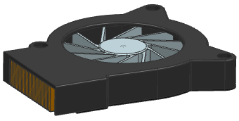
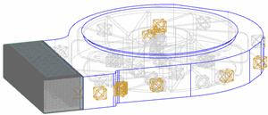

Creating a fluid volume
While the solid mesh for a design part occupies the part itself, the fluid mesh occupies the void between the bodies.
Because the void itself is not a body, you must create a solid body to occupy the void, You create the solid body in the Modeling application then mesh this body with 3D fluid elements with the NX meshing tools or using Fluid Domain  simulation object in the FEM or Simulation files respectively.
simulation object in the FEM or Simulation files respectively.
|

|
Electronics fan and heatsink
|

|
Extracted fluid volume of the electronics fan and heatsink
You can model the geometry of the fluid inside an assembly or a part with a complex internal cavity. You can also model multiple fluids in a single model, provided no mixing takes place.
You can create a fluid volume using one of these methods:
-
Define a sketch representing the 2D shape of a regular fluid volume and then Extrude and/or Revolve the sketch. Use this technique if you know the shape and dimensions of the fluid volume.
-
Use Boolean operations to create the fluid volumes. You create a solid representing the enclosed space and select the Unite, Subtract, or Intersect to modify the shape of the volume based on the intersecting solid component geometry. Use this technique if you want to create this fluid volume for single use in an analysis and if you are not interested in maintaining links for geometry updates.
-
Create the enclosed fluid volume as a separate part file and component in your assembly file structure using the WAVE Geometry Linker command. This command copies an instance of the geometry of the inner volume and the components from the assembly part file. You then modify the contour to represent the fluid volume by using the Delete Face command (on the Synchronous Modeling toolbar). Use this technique if you want to maintain a link to the geometry of assembly components to allow for geometry updates.